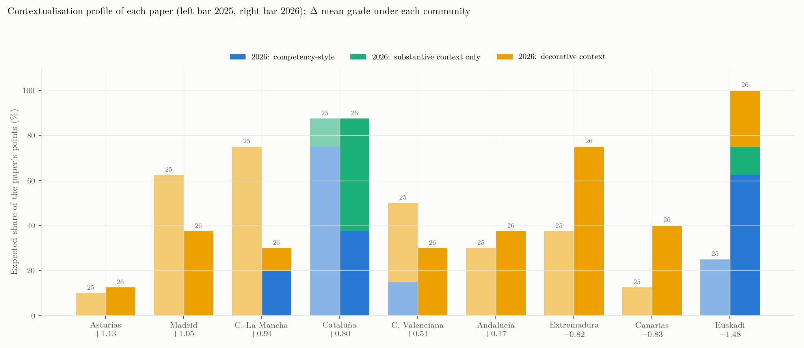
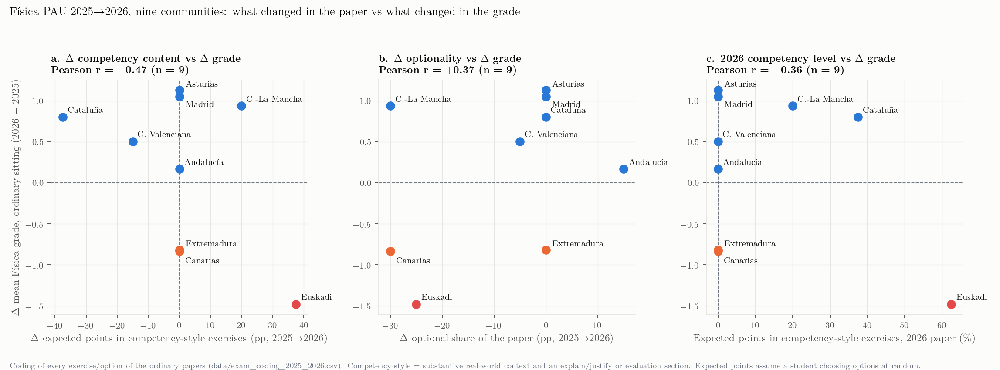
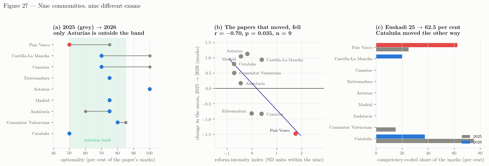

The papers themselves
How competency-oriented were the 2025 and 2026 Física exams in the communities that rose and in those that fell?
The question
The comparative chapters establish that between 2025 and 2026 the Física mean rose in six of the nine communities with a published figure and fell in three, Euskadi most of all. One reading of that pattern, put forward when this chapter was commissioned, is that the Basque paper moved further towards the competency model than the others: in 2025 the EHU paper had one competency-style exercise out of four blocks; in 2026 it had two obligatory competency exercises out of four, that is half of the marks. If the communities that rose did not move at all, the “competency” label would be doing very different work in different places, and the 2026 Basque result would be at least partly a paper-design event rather than a cohort event.
That is a question about the exams, not about the results, so this chapter reads the exams. The eighteen ordinary-sitting papers (nine communities × two years; where a community set more than one model in a sitting, as Andalucía did in 2025, the first titular model is the one coded) were collected — the Data hunt chapter and the source registry say where each came from — and every exercise, with every option counted separately, was coded on the same criteria that the EHU competency-conversion scheme uses. The coding file is data/exam_coding_2025_2026.csv (146 rows); the script that turns it into the tables and figures of this chapter is scripts/07_exam_coding.py.
The coding scheme
Each item (an exercise, or one option of an exercise) carries the structural facts — block, obligatory or optional, number of options in its slot, points — and six content codes:
| Code | Meaning |
|---|---|
ctx |
0 no context · 1 decorative (a named real object or setting, but the tasks are the standard calculation and the context adds no data, claim or decision) · 2 substantive (a scenario, role, headline, regulation or design specification that drives the tasks or must be interpreted) |
app |
a technological, medical, social or environmental application is named |
explain |
at least one section demands a qualitative explanation or justification in words that is not itself a calculation |
graph |
the student must read data off a given graph, table, photograph or figure |
draw |
the student must produce a diagram (ray tracing, vector scheme, force diagram, sketch of a curve) |
evaluate |
a numerical result must be judged against a real-world criterion, claim, specification or regulation (“¿te parece realista?”, “cumple el requisito?”, “¿está protegida?”) |
From these, an item is competency-style when it has a substantive context and an explain or an evaluate section — the minimum that the EHU scheme (real-world narrative, qualitative reasoning, evaluation) and the UJI study’s three criteria (contextualised, productive, complex) have in common. Two paper-level measures follow. The expected share of competency points assumes a student who chooses options at random,
\[ E_{\text{comp}} \;=\; \frac{1}{10}\sum_{i} \frac{p_i\,c_i}{n_i}\times 100, \]
where \(p_i\) are the points of item \(i\), \(n_i\) the number of options in its slot (1 when obligatory) and \(c_i\in\{0,1\}\) its competency flag; and the guaranteed competency points are those of obligatory items only, which no choice of options can avoid. The optional share of a paper is the fraction of its 10 points that sit in slots where the student chooses. A last, cruder measure, criteria per item, is the mean number of the five EHU criteria (substantive context, application, explain, graph, evaluate) met by an item.
Three caveats before the numbers. The coding is one reader’s, made in one pass with the scheme fixed in advance; borderline calls are recorded in the note column so they can be disputed, and a blind second coding of all 146 items made during the audit of 19 September (Audit; logs/audit/E_second_coding.csv) agreed with it on every direction of change and on the Basque and Castilla-La Mancha levels (κ = 0.76 on the competency flag; 0.83–1.00 on draw, graph, evaluate and explain), while reading Cataluña’s contexts more strictly (competency share 37.5 → 25 % rather than 75 → 38 %). The ctx 1/2 boundary is the least reliable element of the scheme. Only the ordinary sitting is coded. And nothing here measures difficulty — a naked, context-free question can be very hard and a contextualised one very easy; the chapter is about the type of paper, which is what the question asked.
Structure and content of the eighteen papers
data/exam_structure_2025_2026.csv.
| Paper | Structure | Items offered | Items answered | Optional % | Obligatory pts |
|---|---|---|---|---|---|
| Andalucía 2025 | Four blocks: a) obligatory (1) + choose b1/b2 (1.5) | 12 | 8 | 60 | 4.0 |
| Andalucía 2026 | Block A obligatory (a + b); blocks B-D: choose a1/a2 and b1/b2 | 14 | 8 | 75 | 2.5 |
| Asturias 2025 | Answer any 5 of 8 questions (2 each) | 8 | 5 | 100 | 0.0 |
| Asturias 2026 | Answer any 5 of 8 questions (2 each) | 8 | 5 | 100 | 0.0 |
| Canarias 2025 | Four blocks: choose option A or B (2.5 each) | 8 | 4 | 100 | 0.0 |
| Canarias 2026 | Obligatory 1a (1.5) and 2 (1.5); the rest in pairs (2.5/3/3/1.5 per block) | 12 | 7 | 70 | 3.0 |
| Castilla-La Mancha 2025 | Four questions, each: answer 2 of 3 sections | 4 | 4 | 100 | 10.0 |
| Castilla-La Mancha 2026 | A obligatory (2); B, C: fixed 0.5 + choose 1 of 2 (2.5); D: choose 1 of 2 (2) | 9 | 6 | 70 | 3.0 |
| Cataluña 2025 | Four exercises; options A/B in ex. 2 and 3 | 6 | 4 | 50 | 5.0 |
| Cataluña 2026 | Four exercises; options A/B in ex. 1 and 4 | 6 | 4 | 50 | 5.0 |
| Comunitat Valenciana 2025 | Six questions; question 2 obligatory (1.5); the other five A/B | 11 | 6 | 85 | 1.5 |
| Comunitat Valenciana 2026 | Four apartados; apartado 1 single option (2); 2-4 A/B (3/3/2) | 7 | 4 | 80 | 2.0 |
| Extremadura 2025 | Block A obligatory; blocks B-D: choose 1 of 2 | 7 | 4 | 75 | 2.5 |
| Extremadura 2026 | Block A obligatory; blocks B-D: choose 1 of 2 | 7 | 4 | 75 | 2.5 |
| Madrid 2025 | Block 1 obligatory; blocks 2-4: choose A/B | 7 | 4 | 75 | 2.5 |
| Madrid 2026 | Block 1 obligatory (graph item); blocks 2-4: choose A/B | 7 | 4 | 75 | 2.5 |
| País Vasco 2025 | Block A obligatory; blocks B, C, D: choose 1 of 2 (2.5 each) | 7 | 4 | 75 | 2.5 |
| País Vasco 2026 | Ex. 1 and 2 obligatory (competencial); ex. 3 and 4: choose a/b | 6 | 4 | 50 | 5.0 |
ctx ≥ 1; “substantive-context items” have ctx = 2; “competency items” additionally demand explanation or evaluation. Expected competency points assume random choice of options; obligatory competency points cannot be avoided. File: data/exam_structure_2025_2026.csv.
| Paper | Contextualised items % | Substantive-context items % | Competency items % | Expected competency pts % | Obligatory competency pts |
|---|---|---|---|---|---|
| Andalucía 2025 | 33 | 0 | 0 | 0 | 0.0 |
| Andalucía 2026 | 29 | 0 | 0 | 0 | 0.0 |
| Asturias 2025 | 50 | 0 | 0 | 0 | 0.0 |
| Asturias 2026 | 62 | 0 | 0 | 0 | 0.0 |
| Canarias 2025 | 12 | 0 | 0 | 0 | 0.0 |
| Canarias 2026 | 42 | 0 | 0 | 0 | 0.0 |
| Castilla-La Mancha 2025 | 75 | 0 | 0 | 0 | 0.0 |
| Castilla-La Mancha 2026 | 22 | 11 | 11 | 20 | 2.0 |
| Cataluña 2025 | 83 | 83 | 67 | 75 | 5.0 |
| Cataluña 2026 | 83 | 83 | 50 | 38 | 0.0 |
| Comunitat Valenciana 2025 | 45 | 9 | 9 | 15 | 1.5 |
| Comunitat Valenciana 2026 | 29 | 0 | 0 | 0 | 0.0 |
| Extremadura 2025 | 29 | 0 | 0 | 0 | 0.0 |
| Extremadura 2026 | 71 | 0 | 0 | 0 | 0.0 |
| Madrid 2025 | 57 | 0 | 0 | 0 | 0.0 |
| Madrid 2026 | 29 | 0 | 0 | 0 | 0.0 |
| País Vasco 2025 | 14 | 14 | 14 | 25 | 2.5 |
| País Vasco 2026 | 100 | 67 | 50 | 62 | 5.0 |
data/exam_structure_2025_2026.csv.
| Paper | Application % | Explain/justify % | Graph/data interpretation % | Diagram production % | Evaluation/judgment % | Criteria met per item (of 5) |
|---|---|---|---|---|---|---|
| Andalucía 2025 | 8 | 58 | 0 | 33 | 0 | 0.67 |
| Andalucía 2026 | 14 | 79 | 0 | 21 | 0 | 0.93 |
| Asturias 2025 | 25 | 50 | 0 | 38 | 0 | 0.75 |
| Asturias 2026 | 12 | 12 | 0 | 12 | 0 | 0.25 |
| Canarias 2025 | 12 | 25 | 0 | 12 | 0 | 0.38 |
| Canarias 2026 | 8 | 17 | 0 | 8 | 0 | 0.25 |
| Castilla-La Mancha 2025 | 25 | 75 | 25 | 25 | 0 | 1.25 |
| Castilla-La Mancha 2026 | 22 | 33 | 0 | 22 | 0 | 0.67 |
| Cataluña 2025 | 33 | 83 | 0 | 67 | 0 | 2.00 |
| Cataluña 2026 | 67 | 50 | 0 | 33 | 33 | 2.33 |
| Comunitat Valenciana 2025 | 18 | 45 | 27 | 36 | 9 | 1.09 |
| Comunitat Valenciana 2026 | 29 | 43 | 57 | 14 | 0 | 1.29 |
| Extremadura 2025 | 14 | 57 | 29 | 0 | 0 | 1.00 |
| Extremadura 2026 | 43 | 29 | 14 | 29 | 0 | 0.86 |
| Madrid 2025 | 29 | 14 | 0 | 14 | 0 | 0.43 |
| Madrid 2026 | 14 | 0 | 29 | 0 | 0 | 0.43 |
| País Vasco 2025 | 14 | 43 | 14 | 43 | 0 | 0.86 |
| País Vasco 2026 | 67 | 83 | 0 | 17 | 50 | 2.67 |

What the papers of the rising communities look like
Asturias (\(+1.13\)) and Madrid (\(+1.05\)), the two largest rises, had no competency-style exercise in either year. Asturias keeps its long-standing format — answer any five of eight two-point questions, so the whole paper is optional — and its contexts are decorative and, in 2026, whimsical: a melon weighed on Jupiter, two pumpkins and an apple, a kayak off Cudillero, a porcelain figurine in front of a mirror. Its 2025 paper actually demanded more reasoning (justify the sign of the work and whether it depends on the path; the Doppler echo question) than its 2026 paper, whose criteria-per-item score (0.25, tied with Canarias 2026) is among the lowest of the eighteen. Madrid’s obligatory question changed from a narrated dwarf-planet problem (Eris, 2025) to an item built around a measured potential between two plates (a \(V(x)\) graph is printed, but \(V(x)=-3x\) is also given in the text, so the graph is illustrative rather than read; a second coder scored it as no graph interpretation) — and the rest of the 2026 paper is bare: no context at all in five of seven items. Madrid’s optionality (75 %) did not move.
Castilla-La Mancha (\(+0.94\)) is the only rising community whose paper moved towards the competency model, and it did so modestly: a new obligatory two-point item set in the Artemis II re-entry (compare the orbital and escape speeds; compute the energy to dissipate for a safe landing) replaced a “choose two of three sections” Saturn problem, and the paper’s optionality fell from 100 % to 70 %. Its expected competency points went from 0 to 20 %, all of them guaranteed. Everything else in the 2026 UCLM paper is classical.
Cataluña (\(+0.80\)) was, in 2025, the most contextualised paper of the set — every exercise narrated (space debris and the end of the ISS, Millikan’s experiment, a coin inside a polycarbonate block in an art exhibition, a flute, a Na-24 blood-volume tracer) with “justifiqueu” sections throughout — and it stayed that way in 2026 (a Generalitat nanosatellite, Halley’s comet, an X-ray tube, a phone’s vibration motor, Chernobyl at forty years). Its structure did not change either: four exercises, options in two of them, 50 % optional. On this coding its competency share fell (75 → 38 %; 37.5 → 25 % for the stricter second coder), because two of the 2026 contexts drive calculations only and the explain/evaluate demands moved into the optional exercises; five of Cataluña’s six items carry a context in both years, and how many of those contexts count as substantive is the one place where the two coders differ materially (87.5 % against 25–37.5 %). Catalan students have sat contextualised papers for well over a decade — the UJI study rates Cataluña, with País Vasco, as the most competency-oriented system of 2015–2025 (Sánchez-Tarazaga & Gimeno Rovira, 2026) — so for them 2026 brought no change of genre.
Comunitat Valenciana (\(+0.51\)) went the other way. Its 2025 obligatory item was the most fully competency-style question in any 2025 paper outside Cataluña: a worker in a chlorine-electrolysis plant under an 18 kA cable, the Biot–Savart law to be stated and explained, the field to be drawn, and the result to be judged against the 2 T limit of Real Decreto 299/2016. In 2026 the obligatory item is a Deimos-2 satellite whose only demands are “deduce and calculate”. Valencia also redesigned its paper (six questions with 85 % optional points → four apartados with 80 %) and its 2026 paper is rich in graph and figure interpretation (57 % of items: a photographed rope wave, a laser scheme with angles to read, an \(E_k\)–\(f\) photoelectric plot to interpret) — a different flavour of “competency” from the narrative one.
Andalucía (\(+0.17\)) kept its style — a conceptual true/false “razone” section plus a problem in each block — and increased optionality from 60 % to 75 % by making the conceptual sections optional too. No competency-style exercise in either year; decorative contexts only (a suitcase dragged through an airport, a child on a slide, a wind farm in the Strait of Gibraltar).
What the papers of the falling communities look like
País Vasco (\(-1.48\)). The 2025 paper had seven problems in four blocks, one obligatory (Galileo satellite — an ESA/AVS narrative in which the student is a member of a design team, with “justifica”, “explica” and “discute” sections and a figure to check results against), and the other three blocks chosen one of two among classical problems. The 2026 paper has six items, of which the two obligatory ones — an alarmist Starlink headline to be assessed (“¿te parece realista que este impacto destruya grandes zonas?”, plus a reasoning-without-calculation section) and a weather-station microgenerator with a specification to check (fem ≥ 0.50 mV) — meet all five EHU criteria save the graph, and all four options carry a context as well, two of them substantive (a violin and a concert, a projector to be chosen and justified, an oxidised photocathode, the C-14 dating of bone remains with a sketch of the decay law). Every measure moves at once: expected competency points 25 → 62.5 %, guaranteed competency points 2.5 → 5.0, criteria per item 0.86 → 2.67 (the highest of the eighteen papers, above Cataluña’s 2.33), optionality 75 → 50 %. The format changed as well: the 2026 items are cut into six to nine numbered sub-tasks scored in 0.25-point steps, with a constants table replacing per-problem data.
Canarias (\(-0.83\)) did not move towards the competency model at all — its 2026 paper has no substantive context (the one real setting, Cs-137 in dust after a calima episode, is decorative) — but it did change structure: from four blocks with a free choice of option A or B (100 % optional) to a paper with two obligatory items (3 points) and unequal block weights (2.5 / 3 / 3 / 1.5), 70 % optional. Three communities cut optionality by 25 points or more — Castilla-La Mancha and Canarias by 30, Euskadi by 25 — and two of the three fell. Castilla-La Mancha is the exception, and what it did with the space it recovered is the whole of the difference: one obligatory contextualised item, and nothing else changed.
Extremadura (\(-0.82\)) kept an identical structure (block A obligatory, choose one of two elsewhere, 75 % optional) and traded one decorative narrative (two Extremaduran students on an ESA mission, 2025) for another (the Artemis II launch, 2026), adding a photoelectric item built on an experimental data table. No competency-style exercise in either year.
Paper change against grade change

data/exam_change_vs_grade.csv.
| Community | Mean 2025 | Mean 2026 | Δ mean | Optional % 2025 | Optional % 2026 | Competency pts % 2025 | Competency pts % 2026 | Δ competency pts % | Oblig. competency pts 2025 | Oblig. competency pts 2026 | Criteria/item 2025 | Criteria/item 2026 |
|---|---|---|---|---|---|---|---|---|---|---|---|---|
| Asturias | 5.49 | 6.62 | +1.13 | 100 | 100 | 0 | 0 | +0 | 0.0 | 0.0 | 0.75 | 0.25 |
| Madrid | 5.65 | 6.70 | +1.05 | 75 | 75 | 0 | 0 | +0 | 0.0 | 0.0 | 0.43 | 0.43 |
| Castilla-La Mancha | 5.86 | 6.80 | +0.94 | 100 | 70 | 0 | 20 | +20 | 0.0 | 2.0 | 1.25 | 0.67 |
| Cataluña | 6.04 | 6.84 | +0.80 | 50 | 50 | 75 | 38 | -38 | 5.0 | 0.0 | 2.00 | 2.33 |
| Comunitat Valenciana | 5.89 | 6.40 | +0.51 | 85 | 80 | 15 | 0 | -15 | 1.5 | 0.0 | 1.09 | 1.29 |
| Andalucía | 5.69 | 5.86 | +0.17 | 60 | 75 | 0 | 0 | +0 | 0.0 | 0.0 | 0.67 | 0.93 |
| Extremadura | 6.09 | 5.27 | -0.82 | 75 | 75 | 0 | 0 | +0 | 0.0 | 0.0 | 1.00 | 0.86 |
| Canarias | 5.08 | 4.25 | -0.83 | 100 | 70 | 0 | 0 | +0 | 0.0 | 0.0 | 0.38 | 0.25 |
| País Vasco | 5.47 | 3.99 | -1.48 | 75 | 50 | 25 | 62 | +38 | 2.5 | 5.0 | 0.86 | 2.67 |
With nine points most of these correlations are not significant, and the signs are what the question turns on. Across the six communities that rose, the expected competency content went down or stayed at zero in five (Asturias 0 → 0, Madrid 0 → 0, Andalucía 0 → 0, Valencia 15 → 0, Cataluña 75 → 38) and rose only in Castilla-La Mancha (0 → 20). The Basque increase (\(+37.5\) points of expected share, \(+2.5\) guaranteed points) is the largest in the set and is matched in direction by no rising community. The correlation between the change in competency content and the change in grade is negative (\(r=-0.47\), \(p=0.20\); \(-0.62\), \(p=0.08\) on the criteria-per-item measure; and \(-0.85\), \(p=0.004\) on the change in the share of contextualised points — the one correlation here that is significant, though it is also the least stable under a second coder, who gives \(-0.59\)). The correlation with the change in optionality is positive (\(r=+0.37\)): the two papers that removed the most choice (Castilla-La Mancha and Canarias, \(-30\) points each; Euskadi \(-25\)) contain both the third-largest rise and two of the three falls, so optionality alone separates nothing.
What the coding therefore supports is narrower and, for the purpose of the 2027 discussion, more useful than a correlation:
- The 2026 recovery elsewhere happened on papers that had not become more competency-oriented. Where the recovery was largest (Asturias, Madrid) the papers are, on every criterion, traditional; where the paper was already competency-style (Cataluña) it had been so for years and did not change; where a genuinely competency-style obligatory item existed in 2025 (Valencia) it was replaced by a lighter one in 2026.
- The Basque paper is the one paper in the set that changed genre between the two years, and it changed on four axes at once — content type (from one competency exercise to half the marks), guaranteed exposure (the competency exercises are the obligatory ones), optionality (75 % to 50 %) and format (granular 0.25-point sub-tasks). Castilla-La Mancha, the only other paper that moved in the same direction, moved on one axis by a fifth of the distance and rose.
- Canarias shows that a structural cut in optionality without any competency content coincides with a fall of the same order as the second Basque step. That is one data point, and Canarias carries its own history (the 2019 collapse, the third-exam-of-the-day timetable noted in its coordination minutes); but it means the Basque fall cannot be attributed to the competency exercises rather than to the reduction in choice, on this evidence.
The cleanest statement is the one the earlier chapters left open: the reform framework (RD 534/2024) is common to all seventeen communities and cannot explain 2026; the papers are not common, and the Basque 2026 paper differs from its 2025 predecessor more than any other paper in this set differs from its own. Whether that difference produced the fall through the competency exercises, through the loss of choice, through the unfamiliar granular format, through the amount of reading the new items require in the time allowed (Andalucía, Extremadura and Madrid print 90 minutes on the paper; the EHU papers in this archive print no duration), or through marking-scheme effects that the corrector documents would show, is a question the grade data cannot settle and the exams alone cannot either. The natural next step is the one the UAM and Las Palmas commissions have taken elsewhere: an item-level analysis of the 2026 Basque scripts (marks by sub-task, by exercise and by option chosen), which would say directly whether the two obligatory competency exercises are where the 2 066 candidates lost their marks.
Did the nine sit comparable exams?
The previous section compares papers with each other. This one compares each paper with the structural criteria it was supposed to meet, because a comparison across communities is only a comparison if the nine were building to the same specification.
Three criteria are applied, in the form the EHU coordination applies them: optionality between 50 % and 85 % of the paper’s marks; at least 70 % of the marks from open or semi-constructed response; and at least one obligatory item carrying a substantive real-world context. A fourth measure is added and is not a criterion — the share of the paper’s expected marks that is competency-coded in the double-coded scheme of this chapter, meaning items that carry a substantive context and ask the candidate to explain or to evaluate.
data/analysis/comparability.json.
| Community | Optionality | C1 50–85 % | Open response | C2 ≥70 % | Obligatory contextualised items | C3 ≥1 | Competency marks | Change in the mean |
|---|---|---|---|---|---|---|---|---|
| País Vasco | 50 % | yes | 100 % | yes | 2 (5.0 pt) | yes | 62.5 % | -1.48 |
| Castilla-La Mancha | 70 % | yes | 100 % | yes | 1 (2.0 pt) | yes | 20.0 % | +0.94 |
| Canarias | 70 % | yes | 100 % | yes | 1 (1.5 pt) | yes | 0.0 % | -0.83 |
| Extremadura | 75 % | yes | 100 % | yes | 1 (2.5 pt) | yes | 0.0 % | -0.82 |
| Asturias | 100 % | no | 100 % | yes | 0 (0.0 pt) | no | 0.0 % | +1.13 |
| Madrid | 75 % | yes | 100 % | yes | 1 (2.5 pt) | yes | 0.0 % | +1.05 |
| Andalucía | 75 % | yes | 100 % | yes | 1 (1.5 pt) | yes | 0.0 % | +0.17 |
| Comunitat Valenciana | 80 % | yes | 100 % | yes | 1 (2.0 pt) | yes | 0.0 % | +0.51 |
| Cataluña | 50 % | yes | 100 % | yes | 2 (5.0 pt) | yes | 37.5 % | +0.80 |
The 2026 papers against the three structural criteria. C2 is met by every paper — on a reading of the eighteen papers, none of the 146 coded items uses a closed response format — so it separates nobody. “Competency marks” is the share of expected marks from items that carry a substantive context and ask the candidate to explain or to evaluate; it is not a criterion, and it is where the nine differ most.
The second criterion separates nobody: on the reading made here, none of the 146 coded items in the eighteen papers uses a closed response format — no multiple choice, no true/false, no matching — so every paper meets it at 100 %. That is a judgement from reading the papers rather than a coded variable, since the coding scheme of this chapter records what an item demands and not how it is answered; it is recorded and set aside because it separates nobody either way.
The first and third do separate. Asturias sits outside the optionality band at 100 % — its candidates answer any five of eight questions and nothing on the paper is obligatory, so it fails the first criterion and the third at once. It is also the community with the largest rise in 2026 (\(+1.13\)). Every other 2026 paper sits inside the band, and every other 2026 paper carries at least one obligatory contextualised item, though in six of the eight that have one at all the item is contextualised without being competency-coded: a real-world framing around a calculation, with nothing asked that requires the candidate to explain or to judge.
Where the nine genuinely part company is the fourth column. Euskadi’s 2026 paper draws 62.5 % of its expected marks from competency-coded items; Cataluña 37.5 %, Castilla-La Mancha 20 %, and the remaining six exactly zero.

How far each paper moved
The criteria describe a level. What the 2026 results turn on is movement, so each paper’s change from its own 2025 predecessor is summarised in one index: the mean of four standardised movements — optionality (entering with its sign reversed, since cutting choice is the direction the orientations ask for), competency-coded marks, substantive context, and contextualised marks. Standardising inside the nine makes it a ranking device and not a scale with meaning of its own.
data/analysis/comparability.json.
| Community | Optionality | Competency marks | Substantive context | Contextualised marks | Index | Rank | Change in the mean |
|---|---|---|---|---|---|---|---|
| País Vasco | -25 pp | +37.5 pp | +50.0 pp | +75.0 pp | +1.76 | 1 | -1.48 |
| Castilla-La Mancha | -30 pp | +20.0 pp | +20.0 pp | -45.0 pp | +0.39 | 2 | +0.94 |
| Canarias | -30 pp | +0.0 pp | +0.0 pp | +27.5 pp | +0.39 | 3 | -0.83 |
| Extremadura | +0 pp | +0.0 pp | +0.0 pp | +37.5 pp | -0.01 | 4 | -0.82 |
| Asturias | +0 pp | +0.0 pp | +0.0 pp | +12.5 pp | -0.19 | 5 | +1.13 |
| Madrid | +0 pp | +0.0 pp | +0.0 pp | -25.0 pp | -0.44 | 6 | +1.05 |
| Andalucía | +15 pp | +0.0 pp | +0.0 pp | +7.5 pp | -0.45 | 7 | +0.17 |
| Comunitat Valenciana | -5 pp | -15.0 pp | -15.0 pp | -20.0 pp | -0.71 | 8 | +0.51 |
| Cataluña | +0 pp | -37.5 pp | +0.0 pp | +0.0 pp | -0.72 | 9 | +0.80 |
Movement of each 2026 paper from its own 2025 paper, in percentage points of the paper’s marks, and the standardised index built from the four columns (optionality enters with its sign reversed). Across the nine communities the index correlates with the change in the mean at r = -0.701 (p = 0.0355); the fitted slope is -0.87 marks per index unit. Euskadi is the extreme point on both axes: dropping it leaves r = -0.396 (p = 0.332) among the other eight, so the coefficient is largely one community making the point. The rank correlation over all nine is rho = -0.383 (p = 0.308).
Euskadi ranks first on the index, at \(+1.76\) standard deviations, more than a full standard deviation clear of the second. It is the only community that moved all four axes in the direction the orientations ask for: optionality down 25 points, competency-coded marks up 37.5, substantive context up 50, contextualised marks up 75. Castilla-La Mancha is the only other community that both cut optionality (by 30 points) and raised its competency share (0 → 20 %), and it moved contextualised marks 45 points the other way, which is why its index is \(+0.39\) against Euskadi’s \(+1.76\). Cataluña, the only community with a comparably competency-oriented paper, moved the competency share 37.5 points the other way. Three communities — Asturias, Madrid and Extremadura — moved on no axis except the contextualised share, and none of the nine is at zero on all four.
Across the nine the index and the change in the mean are related at \(r = -0.70\) (\(p = 0.035\)) — the papers that moved, fell. That coefficient must be read with its leverage stated: Euskadi is the extreme point on both axes, and removing it leaves \(r = -0.40\) (\(p = 0.33\)) among the other eight, while the rank correlation over all nine is \(\rho = -0.38\) (\(p = 0.31\)). So this is not eight communities independently confirming a relationship. It is one community that moved furthest and fell furthest, in a field where the sign among the others is the same but the evidence is weak.
What this does and does not establish
It does establish that the nine 2026 Física papers are not nine measurements of one thing. They moved in different directions and by very different amounts, one of them sits outside the structural band on two criteria, and the community whose paper changed most is the community whose mean fell most.
It does not establish that anybody failed to comply with anything. The criteria used here are the ones that govern the Basque paper, taken from the orientation document the EHU coordination works to. The text of RD 534/2024 and the Ministry and CRUE orientations are not in this study’s source registry: they were not retrievable during the data hunt, and no attempt is made here to quote or paraphrase them. Whether those criteria bind every community, bind them in this form, or are advisory, is unresolved — and it is unresolved in a way that matters, because the difference between “Euskadi did what was required and others did not” and “Euskadi did more than was required” is the difference between a compliance question and a design choice. It is request 9 in Chapter 6.
What can be said without the binding text is narrower and still useful for the 2027 discussion. Whatever the requirement was, eight communities read it as compatible with a paper that changed little or not at all, and their candidates scored better in 2026 than in 2025. Euskadi read it as calling for a paper that changed on four axes at once. Both readings produced a 2026 paper; only one of them produced a 2026 paper whose candidates had never seen anything like it.
A note on the UJI rating
The UJI study (Sánchez-Tarazaga & Gimeno Rovira, 2026) rated País Vasco and Cataluña as the most competency-oriented PAU systems of 2015–2025 and Madrid as the least. The present coding of the 2025 papers agrees on the ordering (Cataluña 2.00 and Euskadi 0.86 criteria per item versus Madrid 0.43), with the Basque 2025 paper owing its position to a single obligatory exercise. In 2026 the Basque paper (2.67) overtakes Cataluña (2.33); Madrid (0.43) does not move. If “competency orientation” is measured as the UJI study measures it, the 2026 Basque paper is now the most competency-oriented Física paper among the nine coded here on both coders’ readings (2.67 criteria per item against Cataluña’s 2.33; 2.50 against 1.83 for the second coder) — which is the strongest form of the hypothesis this chapter was asked to test, and the reason the item-level data matter.